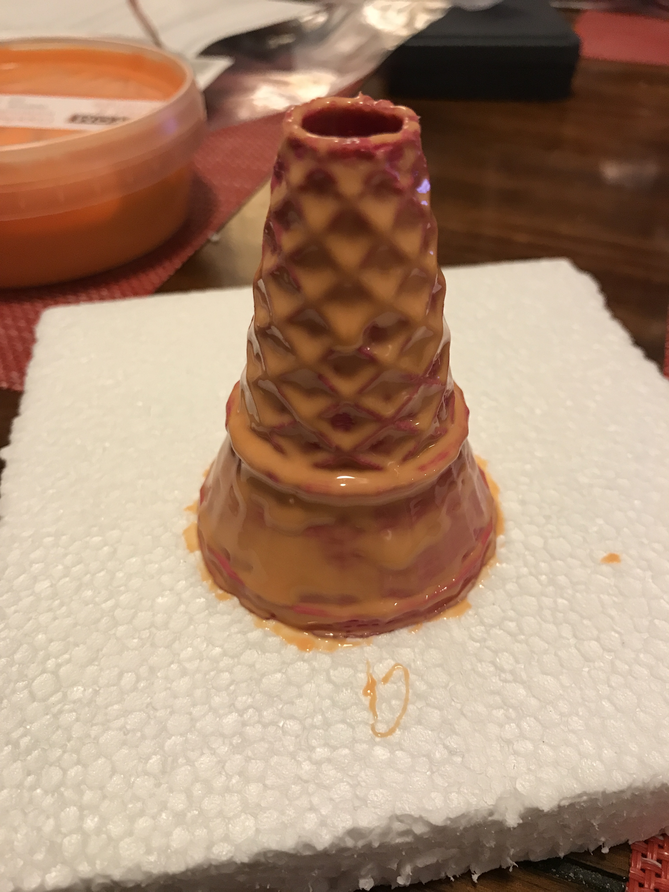

process
01
Get Inspired
As soon as I heard we could do food, my mind immediately went there.
02
Getting a model
I was debating whether or not I wanted to make a 3D model or download one off Thingiverse. Since I wanted to focus on learning how to mold and cast, I decided to download the model made by Drawpen.
As I was drawing out my approach for casting and molding, I realized I would need to cut the cone in two pieces, otherwise, it would be too difficult to pull the mold out.
03
3D Printing
Printing was pretty straightforward for this. At one point, the filament thinned out and it became a natural break point.
04
Making the mold
I ended up buying food safe silicone from Make Your Own Molds since it was cheaper than Amazon. I watched a few videos to get an idea of how I could approach making it so that the details of the cone would show up without a lot of bubbles.
A few takeaways
- Use a scale to make sure weights are accurate
- Use separate disposable plastic cups and spoons. One for A and one for B
- Make sure to mix the silicone really well
- Use a paintbrush to first paint the details
- When filling the rest of the mold, make sure everything is airtight. I used a hot glue gun and a solo cup to keep things from leaking
- When pouring the silicone in, pour it from a higher distance so the silicone stretches and there are less air bubbles

kit design and execution
01
Casting chocolate
This was also a crash course in tempering chocolate with a microwave
A few takeaways
- Don't be afraid to heat up the chocolate but stir a lot
- Use vegetable oil to wipe down the interior of the mold to make sure the chocolate doesn't stick
- Use a little vegetable oil to wipe down the final chocolate cast to help with the bloom
- Use parchment paper to prevent the bottom of the mold from leaking
- I ended up cutting the mold down one side so it would be easier to take the chocolate cast out

02
Final Details
Once I figured out how to cast the first chocolate cone after breaking a few, I was able to quickly cast the rest.
And we're done